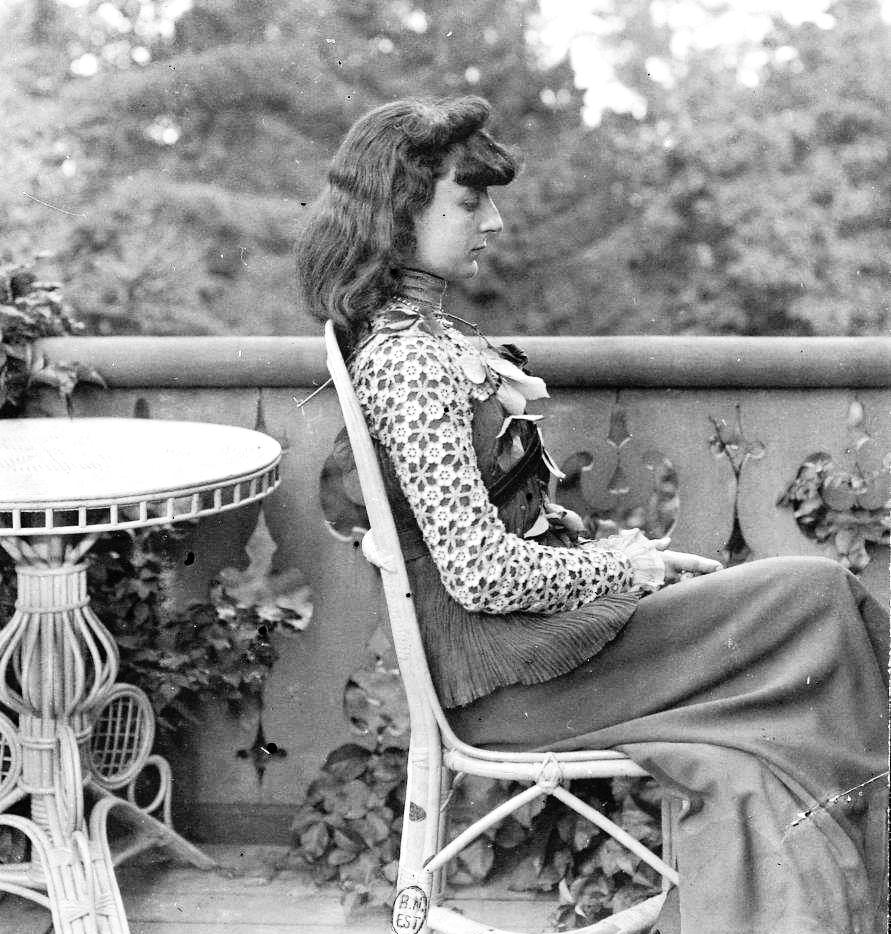

Anna de Noailles
Monsieur Rilke, co Pan myśli o miłości, co Pan sądzi o śmierci? — zapytała hrabina de Noailles, przeszywając poetę swym władczym spojrzeniem. Rilke był zażenowany i oniemiały.
Grudzień roku 1909. Od księżnej Marie von Thurn und Taxis, przebywającej podówczas z wizytą w Paryżu, Rilke otrzymuje zaproszenie na herbatę do Hotel Liverpool. Na spotkaniu ma być również obecna francuska poetka, hrabina Anna de Noailles, księżniczka Bibesco Bassaraba de Brancovan, autorka tomików Le Cœur innombrable, L'Ombre des jours czy Les Vivants et les morts.
Mme de Noailles, czego można się było spodziewać, kazała na siebie czekać — wspomina księżna Taxis. — Kiedy wreszcie rozwarły się drzwi, w progu ukazała się mała, porywcza bogini, jak Rilke zwykł ją później nazywać. W obcisłej, ściągniętej sznurowaniem sukni, spowijającej ją od stóp do samej głowy, comtesse wyglądała niczym egipska statuetka.
Zasiedliśmy zgodnie przy kominku. Mme de Noailles, zarzuciwszy swą pretensjonalność, jak zawsze wzbudzała podziw; wkrótce uświadomiła sobie — wyczułam to w jej głosie — jak niezwykłego człowieka miała oto sposobność spotkać. Z niezmiernym zainteresowaniem przysłuchiwałam się rozmowie dwojga poetów, którzy bez trudu zgłębiali najskrytsze tajniki rzeczy, rozumiejąc się przy tym nieomal bez słów. Nadto było dla mnie rzeczą wielce zajmującą obserwować Niemca i reprezentantkę kultury romańskiej. Sama będąc dzieckiem obydwu nacji, zauważyłam, iż w pewnej kwestii nie mogli znaleźć wspólnego języka. Oboje wybuchnęli śmiechem, kiedy zdołałam wyjaśnić ich nieporozumienie.
W sposób wielce osobliwy Mme de Noailles żaliła się przed poetą, jakich ogromnych trudności może czasem nastręczać sama forma lirycznego wersu, jak wielkiego wysiłku wymaga nierzadko owo zmaganie. Rilke spojrzał wówczas na hrabinę swymi dużymi oczami, w których kryło się zdumienie. — Jakże to, nie sądzi Pan, iż to niekiedy okropnie żmudne? — pytała raz za razem. — Ależ skąd, bynajmniej… — Wydawało się, że poeta nie potrafi tego pojąć. Mniemam, iż Mme de Noailles nie potraktowała jego odpowiedzi z należytą powagą. Dopiero gdy bliżej poznałam Rilkego, zrozumiałam, jak wiele prawdy kryło się w tym zdaniu.
— Marie von Thurn und Taxis w swym Wspomnieniu o Rainerze Marii Rilkem